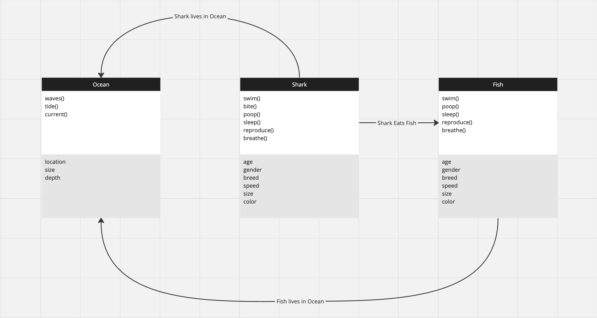

Made my project in a similar but different vein as the frog demo. Using AWSD keys, a shark will try to eat fish. And increase in size by 1% everytime it's successful.
Fish will all be the same size, but vary in speed. In order to eat the fish, the two objects must touch.
Wasn't sure what the point exactly was for some of these descriptors. It won't change the interactions all that much, but the most important part is the size will increase by 1% after every meal.

Have not coded this one yet. Shark attack is on the way.